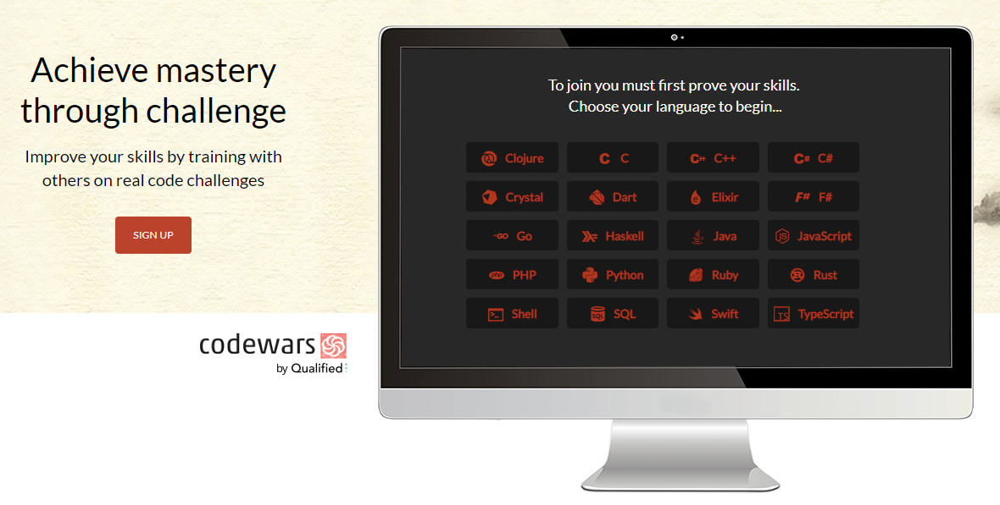
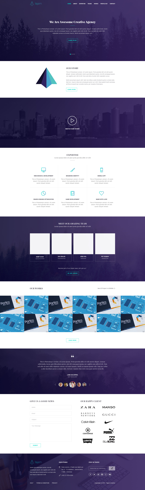

Обо мне
About me
Привет, меня зовут Сергей и я системный администратор. Мой спектр навыков довольно стандартный: от настройки принтеров
и до работы с серверными ОС, доменами и гипервизорами.
Своё знакомство с ЯП я начал на CodeCademy,
затем я попал на Checkio и оттуда на Codewars.
Недавно я принял решение сменить направление карьеры и взялся за изучение фронтэнда.
С результатами моего обучения можно ознакомиться по ссылкам в моём скромном портфолио.
(Click in the top right corner for English version)
Hi, my name is Sergey and I am a systems administrator. My skill range is quite ordinary: from setting up printers
to working with server OS'es, domains and hypervisors.
I started teaching myself how to code on CodeCademy,
then I got to Checkio and then I settled on Codewars.
Recently I decided to change my career path and began studying fron-end web development.
In this small portfolio you can take a look at the results of my training.
Портфолио
Portfolio
-
Codewars
Codewars это платформа, на которой участникам предлагаются задачи по программированию самой разной сложности на десятках различных языков. Многие из этих задач используются в собеседованиях на позицию разработчика. Здесь каждый может найти себе ЯП и примеры по душе.
Их решение способствует развитию и укреплению навыков анализа и написания лаконичного кода, а в случае успешного решения можно ознакомиться с тем, как другие пользователи подошли к разгадке проблемы и оценить варианты, набравшие наибольшее количество голосов. Сайт наполняется участниками, и потому он может заинтересовать в том числе и тех, кто желает развить навыки написания юнит-тестов.
По ссылке на репозиторий можно ознакомиться с примерами того, как я подхожу к решению той или иной задачи. ЯП: JavaScript и Python. Тут можно посмотреть мой профиль на CW.Codewars is a website which offers its users a variety of programming tasks to solve, which differ in complexity and programming language. Many of the similar tasks can often be seen at job interviews for developer positions.
Solving these tasks may enhance one's ability to analize and to write clean code, and in case when the task was solved succesfully, one is able to see how other users approached to solving the problem, and also take a look at the highest rated solutions. The tasks themselves are created by the users, thus, it may also interest you if your goal is to improve your unit-test writing skills.
See how I approach to solving certain prorgramming tasks by clicking on this link. Programming languages are JavaScript and Python. Here is my CodeWars profile. -
Tajam (landing page)
Мой второй свёрстанный по psd-макету лендинг (первый был уж совсем простой).
В нём: первое знакомство с jQuery и добавление небольшой интерактивности, простейшая самописная интерактивная галерея, и моя первая попытка сделать лендинг адаптивным. Оригинал макета на изображении выше. Сам результат в моём исполнении здесь.My second ever landing page that I built using a psd template (first one was way too simple).
In this one: Me getting acquainted with jQuery, simple self-made interactive gallery and my first ever attempt to make everything adaptive. Original template is on the image above. The result itself is here.